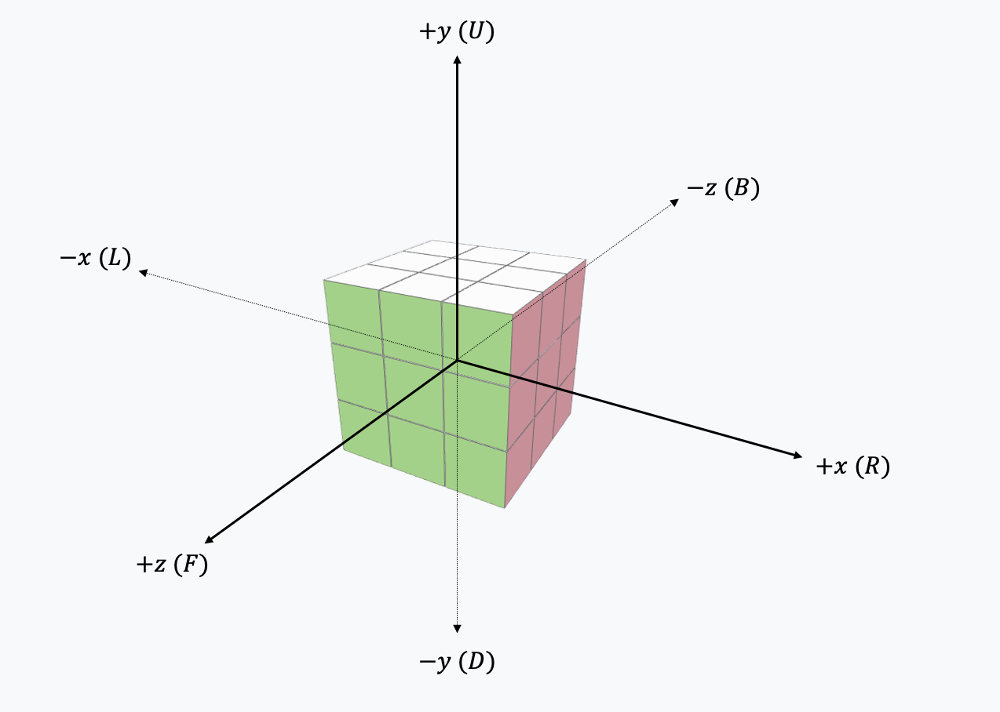
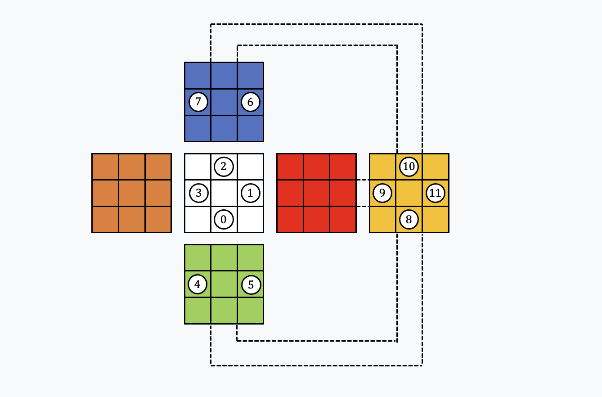
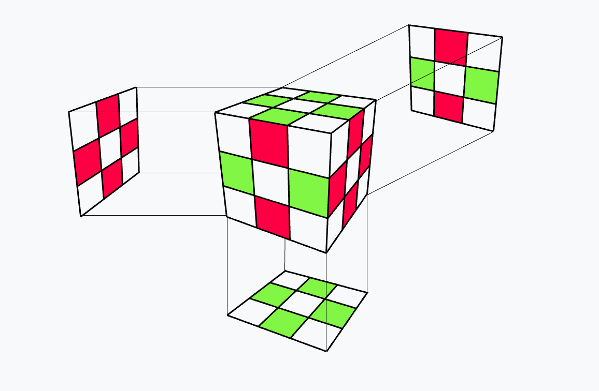
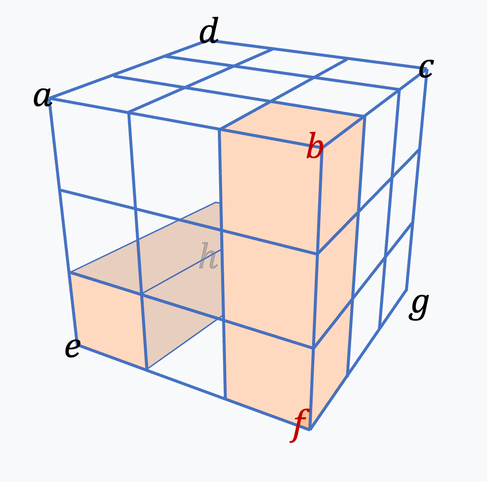
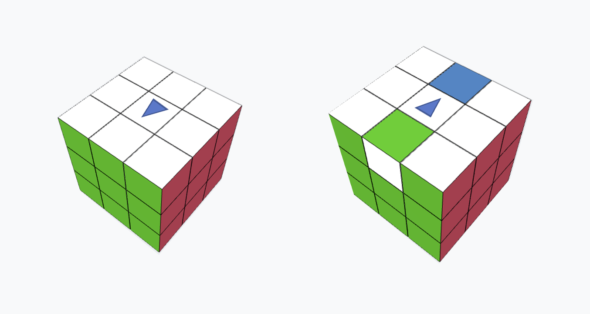

About
このPlaygroundは, シングマスター記法に基づく直感的なルービックキューブ操作を提供します:
シングマスター記法:
$U: $上面を時計回りに90度回転 (Up)
$D: $下面を時計回りに90度回転 (Down)
$L: $左面を時計回りに90度回転 (Left)
$R: $右面を時計回りに90度回転 (Right)
$F: $前面を時計回りに90度回転 (Front)
$B: $背面を時計回りに90度回転 (Back)
ただし, 上面は白色, 下面は黄色, 左面はオレンジ色, 右面は赤色, 前面は緑色, 背面は青色で固定されています。また, 時計回りはそれぞれの面に向かい合った際の方向を指します。
頂点やエッジのキューブについてもu, d, l, r, f, bをそれぞれの面に対応させて同様の規則性で表現されます。例えばufrと書くと, 上面・前面・右面の3つの面が交わる頂点キューブを指すので, ここでは黄赤緑色を持つキューブを指します。
また, 各記号の後に'(アポストロフィ)をつけることはその逆操作をすることを示し, 2をつけることはその操作を2回連続して行う, つまり$180$度回転を行うことを意味します。
Quick Movesのセクションのボタンはこれらの基本操作を適用するものです。また, Algorithmセクションではこれらの記法を用いて連続した操作を行うことができます。ただし, 書き込む際は各スペースの間に半角スペースを入れてください。
このページは最後に群論的な簡単な解説を載せており, ルービックキューブによる直感的な理解や, 操作の群論的理解を助けることを目的としています。
群論 $\times$ ルービックキューブ
シングマスター記法およびこのPlaygroundの直感的な操作の助けを借りて, 群論的な観点の理解を助けます。 また, この内容の作成にあたり「群論の味わい 置換群で解き明かすルービックキューブと15パズル」(David Joyner著, 川辺治之訳 共立出版)および 「群論への第一歩 集合, 写像から準同型定理まで」(結城浩著 SB Creative) を参考にしています。
Try It Out
下のキューブを操作してみてみましょう！
参考までに, よく知られたルービックキューブの操作と対応するシングマスター記法を示します。Copy & Paste して試してみてください。
・セクシームーブ R U R' U'
・右トリガー (右回転) U R U' R'
・ルービックス マヌーバー L R' F' L R' D' L R' B2 L' R D' L' R F' L' R U2
上二つはそれぞれ6回連続で適用すると元に戻ることを確認してみてください ! 後で触れますが, このような部分的な交換を行うことを目的とした操作は Commutator (A→B→A'→B')という括りになります。 また, 3つ目はここではルービックスマヌーバーという呼称で紹介しますがこれは(おそらく)ツクダ式の呼び方に由来していて, 一般的にこの呼び方で指し示される操作はどうやら色々ありそうです。。 同じ面上の向かい合うエッジを両方フリップさせる操作です。中央スライスを回す "$M$" を用いて表現することが一般的かと思いますが, 一応(当たり前だけど)使わずとも表記は可能です。 これは(群論的には?)かなり特殊な操作です。
Loading Rubik's Cube Playground...
Initializing...
遊んでみよう
Quick Moves
Algorithm
Advanced
Info
1. 操作の数学的記述
1-1. 構造の基本表現
ルービックキューブを数学的に記述する上で最も頻繁に登場する関数は「置換」である。 厳密な議論は後に行うが, 実現可能なキューブの状態(=有限集合)の元を混ぜ合わせたり互いに交換したりするような規則である。
まず $3\times3\times3$ ルービックキューブは27個の小立方体により構成される。
中心に存在するキューブは観察されず, また6面それぞれの中心に存在するキューブはあらゆる操作に対して位置関係が変化せず, 固定しても操作の一般性を失わないため群構造からは除外される。
よって残りのキューブを特徴づければ良いことになる。(つまり, 直感的には各面のセンターキューブを除いた8個の小面 $\times$ 6面 = 48個の面の置換を考えればいいことになるが, そこに構造的な制約が伴うためその部分群を扱うことになる)
各操作によりサブキューブの位置と向きが変化することに着目すると, 48個の小面の挙動を個別に考えるよりは筋の良い表現ができそうなことは自然に理解できる。
さらに各操作により移動する小方体は2種類に分類できる。ルービックキューブ全体の頂点位置に対応づけられる, 8個のコーナーキューブと,
各辺の中央に対応づけられる12個のエッジキューブである。
これらの位置と向きに対して制約つき置換を考えることがルービックキューブの数学的記述の基本となる。
このキューブの実装を行う際もこの考え方に基づいており, 各操作に対し適切な置換を定義することにより各キューブの位置と向きを追跡している。
State 部分で corner_perm, および corner_ori などの表示がされているが, これは保持されているキューブの位置と向きをそのまま表示したものになる。(perm = permutation, ori = orientation)
ちなみにこorientationについてはコーナーエッジ共におそらく複数の流儀が存在すると思われるが, 一般的であろう定義を Section 2-4 にて与えている。
1-2. 操作と写像
ルービックキューブは小方体の集合として表せ, そして, あらゆる操作によってもルービックキューブの小方体が欠落したり, どこかに重複して存在したりすることはないことを考えると ルービックキューブの操作は小方体(の位置とその向きの)集合上の全単射として記述できることがわかる (数学的にあまり厳密ではないけれど)。
1-3. 群の定義
群は以下のようなものとして定義される:
ある集合 $G$ と, $G$ 上の二項演算 $*$ が与えられ, 次の3つの性質を満たすとき, $(G, *)$ を群と呼ぶ:
1. (結合律) 任意の $a, b, c \in G$ に対して, $(a * b) * c = a * (b * c)$ が成り立つ。
2. (単位元の存在) $G$ に属するある元 $e$ が存在して, 任意の $a \in G$ に対して, $e * a = a * e = a$ が成り立つ。
3. (逆元の存在) 任意の $a \in G$ に対して, ある元 $b \in G$ が存在して, $a * b = b * a = e$ が成り立つ。
これら3つの性質を群の公理と呼ぶ。
2. 置換群
2-1. 置換
キューブに対する操作は置換として記述できるということは先出ししてしまっていたが, 置換についてここで改めて厳密な定義を与える。
置換とは, 有限集合の元を互いに入れ替えるような写像を指す:
$\mathbb{Z}_n$ の置換とは, $\mathbb{Z}_n$ からそれ自身への全単射であり, しばしば $n$ 次置換とも呼ばれる。
例えば, 1, 2, 3を順番に並べる順列は3次置換と一対一に対応する。
$n$ 次置換全体の集合を $S_n$ と表すとき, 写像の合成を $\circ$ とすると, $(S_n, \circ)$ は群を形成する。これを $n$ 次対称群と呼び, $n$ 次対称群の部分群を置換群と呼ぶ。 Section 1-2 にて任意の操作は小方体集合上の全単射として記述できることを述べたが, それはあらゆる操作が置換群として記述できることを保証する。また有限群の元の個数は有限であるから, 任意の操作は必要十分に多く繰り返せば元に戻ることも保証される。 元の最大位数は $3\times3\times3$では1260であることが知られている(R U2 D' B D')ので, 好きな手を Algorithm 欄に入れて連打すれば1260回以内には元に戻るということである。
つまり, 以前までの議論よりキューブに対する操作は$\{F, B, U, D, L, R\}$を生成元として置換群$G$として記述でき, それは48個の小面の置換群$S_{48}$(48次対称群)の部分群として表現できるとわかる。
ちなみに, あらゆる群は置換群と同型になるということが知られている(ケイリーの定理)。
2-2. 互換
互換とは置換のうち2つの元のみを入れ替えるものを指す。任意の置換は互換の積として分解可能であることが知られているが, どのように分解しても互換の個数の偶奇性は変わらないことが知られている。 これにより, 置換の偶奇性が定義される。 \[ \text{sgn}(\sigma) = \begin{cases} +1 & \text{if } \sigma \text{ is even} \\ -1 & \text{if } \sigma \text{ is odd} \end{cases} \]
つまり置換の偶奇性は互換という操作に基づく, 置換の性質に対するwell-definedな分類であると言えるが, これは行列式と密接に関連している。
置換 $\sigma \in S_n$ に対して置換行列 $P_{\sigma}$ を \[ (P_{\sigma})_{ij} = \begin{cases} 1 & \text{if } j = \sigma(i) \\ 0 & \text{otherwise} \end{cases} \] と定義できる。左からかければ行の並び替えになり, 右からかけると列の並び替えになる。
この置換行列の行列式は, 行や列を入れ替えると行列式の符号は反転するという基本的な性質から, 恒等行列 $I_n$ からの入れ替え回数 $k$ を用いて \[ \det(P_{\sigma}) = (-1)^k \] と表せる。ここで, 行(あるいは列)の入れ替え方は一意ではないが、行列式自体は well-defined な量であるため、$(-1)^k$ の値は分解の違いに依らず一意に定まる。 したがって、 \[ \det(P_\sigma) = \operatorname{sgn}(\sigma) \] が成り立ち、置換の偶奇性が線形代数的にも自然に理解されると言える。
2-3. 巡回置換
次に, 巡回置換(巡換)と呼ばれるものについて考える。巡回置換とは, ある部分集合の元を互いに循環的に入れ替え, それ以外の元は不動にするような置換のことである。 置換 $\sigma$ を $\sigma = (a_1\ a_2\ \cdots\ a_k)$ と表すとき, これは $a_1$ を $a_2$ に, $a_2$ を $a_3$ に, $\ldots$, $a_{k-1}$ を $a_k$ に, $a_k$ を $a_1$ に移す置換を意味する。 これは $k$ 巡換と呼ばれ, 任意の置換は巡換の積として一意的に表現できることが知られている。
エッジ, コーナーキューブそれぞれの向きは巡回置換として表現できる。エッジキューブは2面が見えているから向きの集合は$\{0, 1\}$という2元集合として表現でき, その数は12であるからエッジキューブのorientationは $\mathbb{Z}_2^{12}$ の部分集合として表現できる。 3面が見えているコーナーキューブについても同様の議論で$\{0, 1, 2\}$という3元集合として表現でき, orientationは $\mathbb{Z}_3^{8}$ の部分集合として表現できる。 つまり, 先ほどの$G$は$S_{48}$の部分群であるという議論からさらに具体的に, エッジ / コーナーに分類しその位置と向きを別々に追跡すれば, $G$は$S_8 \times S_{12} \times \mathbb{Z}_3^8 \times \mathbb{Z}_2^{12}$の部分群として表現できるということが言える。
一般に, 任意のn次置換は互いに素な(=動かす元を共有しない)巡回置換の積として表現できることが知られている。証明はここでは与えないが,この定理は次のセクション2-3で1つ目の基本定理であるParity制約を証明する際に必要となる。
また, 巡回群は1つの生成元から作られ, ある元 $g$ を繰り返し作用させることで群の全要素が作られるもののことを指すが, 巡回置換とはつまり一つのサイクルのみを持つものであるから, 巡回置換は巡回群の生成元となっていることがわかる。
2-4. 群論から導かれるキューブの基本定理
ルービックキューブに関する基本的な事実として, ある状態が実現可能であるための必要十分条件が群論的に記述できることが知られている。 コーナーキューブの位置を$\rho$, 向きを$v$, エッジキューブの位置を$\sigma$, 向きを$w$と書く時, ある状態$(\rho,\sigma, v, w) \in S_8 \times S_{12} \times \mathbb{Z}_3^8 \times \mathbb{Z}_2^{12}$が実現可能であるための必要十分条件は以下の3つである:
2. $\sum_{i=1}^{8} v_i \equiv 0 \mod 3$ : コーナーキューブの向き(twist)の総和は0
3. $\sum_{j=1}^{12} w_j \equiv 0 \mod 2$ : エッジキューブの向き(flip)の総和は0
3つの命題を順に証明していく。
準備
$G$ の元 $g$ を初期状態に作用させて得られる状態を \[ \Phi(g)=(\rho(g),\sigma(g),v(g),w(g)) \] と書く。この写像 \[ \Phi:G\longrightarrow S_8\times S_{12}\times\mathbb{Z}_3^8\times\mathbb{Z}_2^{12} \] の像 $\mathrm{Im}(\Phi)$ を「実現可能な状態」の集合と呼ぶ．
命題1: Parity制約
この命題を示すために, 各基本手（いずれかの面の $90^\circ$ 回転）が コーナー置換とエッジ置換にどのように作用するかを調べる。
任意の面の $90^\circ$ 回転を 1 つ固定する。このとき, その面上には 4 個のコーナーと 4 個のエッジが存在し, 回転操作はそれらをそれぞれ 1 つの $4$-巡回置換として巡回させる。このとき, 一般に $4$-巡回置換 \[ (a\,b\,c\,d) \] は \[ (a\,b\,c\,d)=(a\,d)(a\,c)(a\,b) \] と互換の積に分解できるので, 符号は \[ \operatorname{sgn}(a\,b\,c\,d)=(-1)^3=-1 \] となる。したがって, 面の $90^\circ$ 回転に対応する置換のうち, コーナー部分もエッジ部分もともに奇置換である。
以上から, 任意の基本手において \[ \operatorname{sgn}(\rho)\mapsto -\operatorname{sgn}(\rho),\qquad \operatorname{sgn}(\sigma)\mapsto -\operatorname{sgn}(\sigma) \] が同時に成り立つ。特に, 各基本手を適用しても等式 \[ \operatorname{sgn}(\rho)=\operatorname{sgn}(\sigma) \] は不変である。
一方, 初期状態（完成状態）に対応する元 $e\in G$ については \[ \Phi(e)=(\mathrm{id}_{S_8},\mathrm{id}_{S_{12}},0,0) \] であり \[ \operatorname{sgn}(\rho(e))=\operatorname{sgn}(\sigma(e))=+1 \] が成り立つ。任意の $g\in G$ は有限個の基本手 $g_1,\dots,g_k$ の積として書けるから, 上記の不変性より, どのような基本手列を経ても \(\operatorname{sgn}(\rho)=\operatorname{sgn}(\sigma)\) が保たれる。したがって 任意の実現可能状態は命題の等式を満たす。 $\square$
命題2: コーナーねじれ制約
証明のため, コーナーねじれ和 \[ T(v):=\sum_{i=1}^{8} v_i\in\mathbb{Z}_3 \] を考える。初期状態では $v_i=0$ であるから, $T(v)=0$ が成り立つ。 あとは, 任意の基本手に対して $T(v)$ が不変であることを示せばよい。
ここで改めて, (今までは捻れ具合とのみ表現したが) コーナーキューブのorientationに厳密な定義を与える。
まずは次の図の通りに空間座標系を取る:

そして, 各コーナーキューブの向きはそのコーナーの「U または D 色」を持つシールが+y または -y に向いているかどうかで 0 / 1 / 2 を定めるのが一般的なようである。 例えば, ufrコーナーキューブについては白色の面によりorientationが定義されるので, 操作U, Dによっては不変であり, 他4つの操作による変化を考える必要があることになる。
任意の面の $90^\circ$ 回転を 1 つ固定する。この操作により変化するのは, その面上に位置する 4 つのコーナーのねじれのみであり, 残りの 4 つのコーナーのねじれは不変である。
具体的には, 座標系の取り方に依存するものの, 4 つのコーナーに対するねじれ変化は, 変化する場合にのみ着目すると \[ (+1,+1,-1,-1)\in\mathbb{Z}_3^4 \] の順序を入れ替えたもの, として表される。 このとき, ねじれ和の変化は \[ \Delta T = (+1)+(+1)+(-1)+(-1)\equiv 0\pmod{3} \] であるから, $T(v)$ は各基本手の適用によって不変である。 (もちろん, $(0,0,0,0)\in\mathbb{Z}_3^4$の場合も不変)
よって, 任意の $g\in G$ に対して \[ T(v(g))\equiv T(v(e))\equiv 0\pmod{3} \] が成り立つ。すなわち, 任意の実現可能状態に対して \[ \sum_{i=1}^{8} v_i \equiv 0 \pmod{3} \] が成立する。 $\square$
命題3: エッジ反転制約
これについては, エッジキューブの向きの定義がコーナーキューブよりも場合分けが絡みやや煩雑である点と, 議論の方向性は命題2と気持ちが同じもののその場合分けなどにより冗長になるため割愛。エッジキューブのorientationの向きの定義のみ与えることにする。
まず各エッジキューブは2つの面色をもつので, 基本的には「表がどちらか」を全体に対して定義した上で, 各面に対して表裏を与えてやれば良い。 基本的には矛盾が起こらないのならどのような与え方をしても問題ないであろうが, ここでは以下のように定める。まずはUD面を含むか否かで分類する。
- UD型エッジ: U または D の色を含むエッジ（例: UF, UR, UB, UL, DF, DR, DB, DL）
-
側面型エッジ:
U, D を含まず, F,B,R,L の色だけからなるエッジ（例: FR, FL, BR, BL, RF, LF, RB, LB）
そして, 各エッジキューブの「表面」を定義するが, これは以下の図の番号が付けられた面とする。この番号は上の Playground の State 表示に対応しており, エッジキューブのIndexである。 もし手元に物理キューブがあるならば, 以下の図に倣ってシールなどを貼って動かしてみるとわかりやすいであろう。

そして, 「表向き」という状態については以下のように定義される。
- UD型エッジについて: そのエッジが任意の状態である位置にあるとき, U または D の色のシールが U 面または D 面を向いていれば oriented（向き0）, そうでなければ flipped（向き1）と定義する。
- 側面型エッジについて: 完成状態におけるそのエッジの2色のうち, あらかじめ一方を「基準色」と決めておく（例: F/B 側を基準とするなど）。 任意の状態で, この基準色のシールが, 完成状態でその色が向いていたのと同じ向き （F/B/R/L のいずれかの面に対して正しい向き）を向いていれば oriented（向き0）, そうでなければ flipped（向き1）と定義する。
つまり, 以下の緑の位置にシールが来たときは表(向き0), 赤の位置にシールが来たときは裏(向き1)である。

同値性について: 3 条件の同時成立と実現可能性
概要だけ。上の 3 つの命題により, 「任意の実現可能状態は 3 条件 (1)-(3) を満たす」すなわち \[ \mathrm{Im}(\Phi)\subseteq \Omega_0 \] が従う（ここで $\Omega_0$ は 3 条件を満たす状態全体の集合）。
条件を満たす状態の総数とルービックキューブ群 $G$ の位数は \[ \frac{8!\,12!}{2}\cdot 3^7\cdot 2^{11} \] で一致することが求められる。このとき, $\Phi$ は単射であるから \[ |\mathrm{Im}(\Phi)| = |G| = |\Omega_0| \] が成り立つ。よって, 包含関係と濃度の一致により \[ \mathrm{Im}(\Phi)=\Omega_0 \] が従い, 「3 条件をすべて満たすこと」が「実現可能であること」と同値である。
2-5. 置換に関する有名補題
ルービックキューブをうまく解く人は, 以下の補題を暗黙のうちに何度も使っているよう。
補題: $r \in S_n$ を置換とし, $i$ および $j$ を $\{1, 2, \ldots, n\}$ の互いに異なる元とする。$s$ を, $i$ を $j$ に写す置換, すなわち \[ s(i) = j \] とするとき, 置換 $s^r = r^{-1}sr$ は $r(i)$ を $r(j)$ に写す置換である。すなわち, \[ s^r(r(i)) = r(j) \] が成り立つ。
特に, $i_1, i_2, \ldots, i_k$ を $\{1, 2, \ldots, n\}$ の互いに異なる元とし, $s$ を $i_j$ を $i_{j+1}$ に写す巡回置換とするとき,置換 $s^r = r^{-1}sr$ は $r(i_j)$ を $r(i_{j+1})$ に写す巡回置換である。
$b = g ^{^-1} a g$ という関係の元$a, b \in G$ の関係性は「共役 (conjugation)」と呼ばれるが, ルービックキューブはこの共役をよく体感できる構造になっている。
顕著な例が, R' D2 R B' U2 Bを2回繰り返す操作で, これはurfを時計回りに, bldを反時計回りにひねる(上のplaygroundで体験可能)。
ぱっと見複雑な操作であって, 全部同時に追跡するのは難しいように思える。しかし, まずは R' D2 R, B' U2 B それぞれ別々に2回適用してみると (例えば, R' D2 R R' D2 Rということ), キューブは初期状態に戻ることに気づく。そして, R' D2 R B' U2 Bを適用する過程でエッジキューブの移動を考えるとR' D2 RとB' U2 Bは互いに独立に作用していることがわかる。 つまり, R' D2 R B' U2 Bによる変化はコーナーキューブのみ追跡すれば良いと思えば, 上のような命題云々以前に直感的に理解可能とも言えるが, ここではもう少しそこに説明を与える。
先ほどの命題の主張は, $s$ が $ i \rightarrow j$ を起こす時, $r^{-1}s r$ により $s$ の操作は $r$ の移動先でコピーされて起こるということである。
これは, R' D2 Rを例にすると, D2 による置換が R' によって移動した先で起こっているということである。(次の図)

だから, 例えばコーナーキューブに注目すれば, D2による置換: \[ D2 = \begin{pmatrix} e & f & g & h \\ g & h & e & f \end{pmatrix} \] は, R' によって移動した先で起こるので, \[ (D2)^{R'} = \begin{pmatrix} R'(e) & R'(f) & R'(g) & R'(h) \\ R'(g) & R'(h) & R'(e) & R'(f) \end{pmatrix} = \begin{pmatrix} e & b & f & h \\ f & h & e & b \end{pmatrix} \] となるということである。実際にキューブに操作を施してみればこれが確認できるはずである。この考え方に基けば容易に位置と向きが追跡可能であり, この操作全体が2コーナーをtwistすることがわかるだろう。3. 交換子
3-1. 交換子群, 可換群
$a, b \in G$ を群 $G$ の元とするとき, 交換子 (commutator) は一般に$[a, b] = a^{-1} b^{-1} a b$ と定義される。 これは当然ルービックキューブ群にも定義され, 操作の議論をする際は実行順序の都合から $[a, b] = a b a^{-1} b^{-1}$ と定義することが多いが, ここでは実際にその議論に入る前に「交換子群」, 「可換群」を導入する。
交換子群
交換子によって生成される群を交換子群 (commutator subgroup) と呼ぶ。つまり, 全ての交換子の集合を \[ S:={[x, y]| x, y \in G}] \] とおき, この集合$S$ が生成する部分群を \[ [G, G] = \langle S \rangle \] と定義する。 群 $G$ の結合律をそのまま引き継げるし, 単位元は交換子 $[e, e] = e$, 逆元が交換子として表されることも簡単に確認できる。
可換群
群 $(G, *)$ が次の交換律を満たすとき, $G$ は可換群 (abelian group) であると言う: \[ \forall a, b \in G, a * b = b * a \] つまりいわゆる $(\mathbb{Z}, +)$ のような四則演算など慣れ親しんだ数学演算は可換群を形成する。可換群はアベール群とも呼ばれる。
そして, $G$ が巡回群 (→Section 2-3) であるとき, $G$ は可換群であるということが簡単に示せる。
$G$ の生成元を $g$ とする (つまり $G = \langle g \rangle$) とき, 任意の $a, b \in G$ はある整数 $m, n$ に対して $a = g^m, b = g^n$ と書けることが保証される。したがって,
\[
a * b = g^m * g^n = g^{m+n} = g^{n+m} = g^n * g^m = b * a
\]
となり, $G$ は可換群となる。
3-2. 交換子は非可換性の物差しである
ルービックキューブの操作を含め群一般には当然可換は保証されない。(F U とU Fは異なる操作である)
ちなみに行列計算においても交換子という概念が存在し, 行列 $A, B$ に対して $[A, B] = A B A^{-1} B^{-1}$ と定義される。 どちらの交換子ともに可換性との誤差を図るモチベーションによるものである。
\[ ab = [a, b]ba \] であることは定義より明らかであり, ここから$[a, b]$が単位元である時に可換となることがわかる。ここからも交換子が可換との差分を測れていそうなことがわかるだろう。 これ以上の厳密な議論には交換子部分群とアーベル化という概念が登場する(らしい)が,オチは交換子が非可換性の最小抽出を提供するということ。
そして, ルービックキューブの操作において非可換性($[A, B]$によって発生するずれ)は操作$A$, $B$ が同じキューブに作用していることによる。 交換子による操作が二つの操作の干渉した小方体にのみ作用するということ自体は自明であるが, その局所的な作用はルービックキューブを解く上で非常に大切となる。
4. 実用操作についての考察
4-1. セクシームーブ, 右トリガー
解法アルゴリズムと群論的議論を結びつけるのは必ずしも簡単でないが, これらの操作は比較的構造が見えやすいものだろう。 セクシームーブと呼ばれる手順に絞ってここからは解説する:
・セクシームーブ R U R' U'
スピードキューブの文脈では「手になじむ便利な手順」として登場することが多いが, 群論的に見るとかなりきれいな構造をもっている。 この手順は実は, 単に R と U による 交換子 そのものになっていることが Section 3 からわかる。群論的な記述をするなら \[ [R, U] = R U R^{-1} U^{-1} \] となり, あえて面倒な表現をするようだがつまりセクシームーブは「右面回転 $R$ と上面回転 $U$ の非可換性を, 局所的なねじれとして取り出したもの」と解釈できる。
しかしながら, $R$ と $U$ の非可換性がどのように抽出され, 置換として具体的にどのような形になるのか という点は結局のところ決して自明ではない。$R$ と $U$ はそれぞれ単純な 4-cycle を生み出す操作でありながら, (実際にキューブに適用してみるとわかるが) それらを交換子として組み合わせた瞬間に, エッジには 3-cycle が現れ, コーナーには「位置の 2-cycle $\times$ 2」と「向きの 3-cycle」という, 一見するとバラバラな構造が同時に出てくる。 しかし非自明ながら, この「小さな」置換は操作によるキューブの変化の追跡を遥かに簡単にする。
この構造を観察すれば, 位数が6になることがわかる (6 回この操作を繰り返せば元に戻る)。
この操作は手に馴染みやすいだけでなく, このエッジキューブは3-cycleで巡回し, コーナーキューブは2箇所の位置交換と3箇所のねじれを同時に起こすという構造がわかれば書くルービックキューブの解法で使われている理由もきっと理解できることだろう。
4-2. ルビックス マヌーバー
ルービックス マヌーバーとよく呼ばれる最初に紹介した手順の一つ
・ルービックス マヌーバー L R' F' L R' D' L R' B2 L' R D' L' R F' L' R U2
は, 適用してみると二つのエッジのみがフリップしていて他は固定されているように見える。が, (物理キューブが手元にあるならば,)以下のように対象の面のセンターキューブに方向がわかるようなシールを貼ると, そのセンターキューブは反転していることがわかる。これはそもそもルービックキューブの群構造にセンターキューブの向きは含まなかったところに起因する。
この手順そのものに群論的意味づけを与えるのは少々難しい(アルゴリズムと群論的議論は一定切り離される)が, この手順を用いると 「共役 (→ Section 2-5) をよく味わうことができる。
共役の議論をここで思い出すと, $[A, B]$という共役操作を行った際に, $A$ によって移動した先で $B$ の作用がコピーされるということであった。 ここで $B$ に先のルービックス マヌーバーを当てはめることを考えよう。この時, $B$ の作用は $A$ による移動先でコピーされるとのことで, 好きな2箇所のエッジキューブをフリップすること操作が作成できるのである。 Playground の Advanced にて Algorithm B に L R' F' L R' D' L R' B2 L' R D' L' R F' L' R U2 をペーストし, 好きな手を Algorithm A に入れてみると良い。